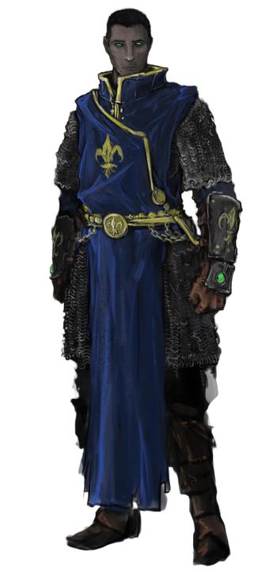
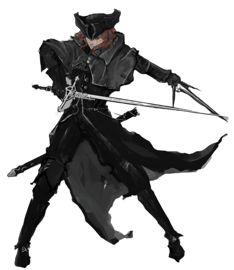

Dungeon Hearts : Heroes & Spells

Ceci est une extension pour la version 1.6 du jeu de rôle monopage Dungeon Heart.
Pour plus de contexte je vous invite à lire cet article de mon blog.
Cette extension requiert 1d12 (un dé à douze faces).
Voici le principe de cette extension : entre chaque assaut d’aventuriers, les joueurs lancent chacun leur tour un dé dans la table d’événements aléatoires ci-dessous, puis doivent sélectionner une des options, si c’est possible et qu’il en reste. Chaque option ne peut être sélectionnée qu’une fois par
Pour chaque capacité “utilisable une seule fois par phase d’invasion”, notez un bâton sur votre feuille lorsque vous l’employez, et barrez-le au début de la phase suivante.

Licence & sources
 Cette extension a été conçu par Lucas Cimon et est sous licence CC BY 4.0.
Cette extension a été conçu par Lucas Cimon et est sous licence CC BY 4.0.
Si vous la testez, songez à me laisser un petit commentaire sur https://chezsoi.org
Les illustrations sont de Ramirez de Souza aka Halycon450 : Abjurer & Yvonne - CC BY-NC-SA 3.0
Merci à Thomas, Henri & Matthieu pour le playtest !
Les Héros sont des aventuriers spéciaux, représentés par des jetons différents sur la carte. Dans un groupe, les Héros ne peuvent être vaincus qu’après tous les autres aventuriers. Choisissez l’un d’eux pour la prochaine phase d’invasion :
- Barbare : lorsqu’il affronte des monstres, ceux-ci sont trucidés si un 2 ou un 3 est obtenu sur les dés lancés.
- Ensorceleuse : charme les monstres, empêchant que les dés soient lancés.
- Érudite : ses grimmoires contiennent les réponses de toutes les énigmes, empêchant que les dés soient lancés.
- Mage : lors d’un boss fight, lancez 2d6 d’une couleur différente pour le Mage. Leur total est pris en compte pour être comparé au dé du Gardien.
- Paladin : entre chaque pièce, si des membres du groupe manquent, lancez un dé : si c’est impair, un aventurier ré-intègre le groupe.
- Rôdeuse : elle sait désamorcer les pièges, empêchant que les dés soient lancés.
Vous ne pouvez choisir un option qui n’aura aucun effet :
- Rixe entre monstres : un montre tue un monstre dans la même pièce ou une pièce voisine.
- Grève générale : vos monstres refusent de travailler pendant 1d3 tours.
- Rage destructrice : un monstre de votre choix se met à détruire toutes les énigmes et pièges sur son passage, à commencer par ceux de sa pièce. Tant qu’une salle adjacente contient un piège ou une énigme, il s’y rend et les détruits. Choisissez la pièce s’il y a plusieurs options. Le monstre s’installe dans le dernier emplacement visité.
- Dragon : ce nouvel arrivant s’installe dans une salle au choix contenant un trésor. C’est un monstre à 5d6 qui occupe tous les emplacements et détruit ce qui s’y trouvait.
- Passage secret : des monstres on construit un passage secret pour sortir de la salle du trésor afin de le piller à votre insu. Placez la sortie de ce passage dans une pièce au choix de manière à ce qu’il fasse gagner du temps aux aventuriers. Il ne peut pas être emprunté que pour sortir de la salle du trésor.
- Inondation : à force de creuser, un de vos monstres provoque une arrivée massive d’eau ou de lave, détruisant 2 emplacements dans la même pièce ou 2 pièces adjacentes.
Choisissez un Gardien : il décrit comment il se retrouve à devoir affronter les prochains aventuriers lui-même à leur arrivée !
Lancez 1d6 par aventurier, et 1d12 pour le Gardien. Le Gardien choisit alors un ou plusieurs dés d’aventuriers dont le total est inférieur ou égal au sien, s’il le peut. Ces aventuriers sont vaincus immédiatement.
Cependant, s’il reste des aventuriers, le Gardien subit une blessure. Le Gardien est libre de continuer le combat, mais chaque fin de tour où il reste des aventuriers lui octroie une nouvelle blessure.
À la fin du combat, pour chaque blessure reçue, le Gardien doit payer 2 battements de cœur ou passer une phase d’invasion directement suivante à récupérer de ses blessures, sans pouvoir participer à la défense du donjon.
Ils sont uniques et ne peuvent être échangés ni prêtés. Décrivez la nature de l’objet qui possède ce pouvoir, et comment votre Gardien l’obtient :
- Arme : procure +3 au d12 du Gardien lors des boss fight
- Armure : permet de ne payer qu’un battement de cœur par blessure lors des boss fight
- Bâton magique : baguette ou sceptre, vous permet de lancer un dé à chaque fois que Cerveau lance un Sortilège : si c’est impair, le sort peut être réutilisé.
- Cape d’invisibilité : lorsque vous participez à un boss fight, vous pouvez choisir de le résoudre après l’entrée des aventuriers dans le donjon, quand vous le souhaitez durant l’invasion, entre 2 pièces.
- Excavatrice : les pièces coûtent ❤ de moins à construire à Squelette.
- Potion : une fois par phase d’invasion, vous pouvez relancer un dé.
Ils ne sont utilisables qu’une fois dans la partie, et seul Cerveau sait les invoquer. C’est lui qui décide quand les employer. Choisissez un enchantement et décrivez comment votre Gardien le découvre :
- Confusion : choisissez librement la prochaine pièce où se déplacent les aventuriers.
- Flashback : relancez les dés d’un jet d’entrée des aventuriers dans une pièce.
- Gigantisme : distribuez 2 augmentation de puissance de monstre (+1 dé).
- Nécromancie : rescucitez un monstre auquel vous aviez donné un nom, et placez-le dans l’emplacement de votre choix.
- Oracle : changez le résultat d’un dé qui vient d’être lancé.
Gagnez +1 XP. 3 XPs vous permettent de débloquer un pouvoir :
- Squelette, au choix :
- pour ❤ vous pouvez optimiser une pièce : vous lancez désormais tous les dés d’un coup, et tous les effets des menaces s’appliquent sur chacun
- durant la phase de préparation, vous pouvez réordonner les liens entre vos pièces
- Moelle : vous pouvez librement réorganiser vos monstres à chaque phase de préparation
- Cerveau : lorsqu’un aventurier est victime d’une énigme, vous pouvez choisir 2 options bonus dans la liste. Pour 3 autres XPs, vous pouvez désormais choisir 3 options bonus.
- Pancreas : les nouveaux pièges que vous construisez combinent 2 types. Pour 3 autres XPs, vos nouveaux pièges combinent désormais les 3 types.